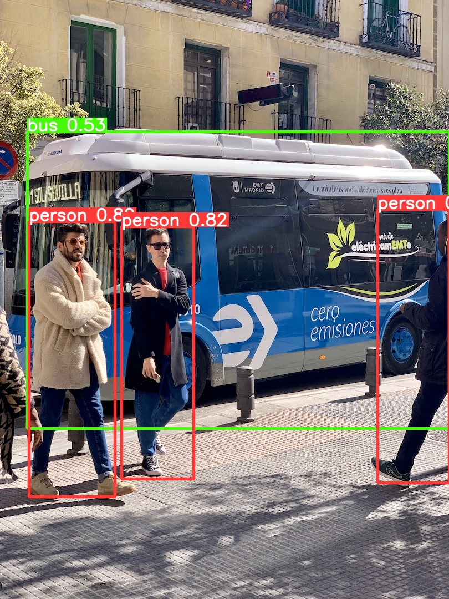

3 persons · 1 bus
Unmodified upstream YOLOv5 v7.0 detect.py .venv-yolo/bin/python YOLOv5/upstream/detect.py --weights YOLOv5/models/yolov5n.onnx --dnn --source YOLOv5/data/bus.jpg --conf-thres 0.4 --device cpu --save-txt --save-conf --project YOLOv5/evidence --name baseline --exist-ok /Users/gimseung-won/mwp-middle02/mwp-middleexam02/YOLOv5/upstream/utils/general.py:34: UserWarning: pkg_resources is deprecated as an API. See https://setuptools.pypa.io/en/latest/pkg_resources.html. The pkg_resources package is slated for removal as early as 2025-11-30. Refrain from using this package or pin to Setuptools<81. import pkg_resources as pkg Matplotlib is building the font cache; this may take a moment. detect: weights=['YOLOv5/models/yolov5n.onnx'], source=YOLOv5/data/bus.jpg, data=YOLOv5/upstream/data/coco128.yaml, imgsz=[640, 640], conf_thres=0.4, iou_thres=0.45, max_det=1000, device=cpu, view_img=False, save_txt=True, save_conf=True, save_crop=False, nosave=False, classes=None, agnostic_nms=False, augment=False, visualize=False, update=False, project=YOLOv5/evidence, name=baseline, exist_ok=True, line_thickness=3, hide_labels=False, hide_conf=False, half=False, dnn=True, vid_stride=1 YOLOv5 🚀 2026-11-6 Python-3.12.14 torch-2.5.1 CPU Loading YOLOv5/models/yolov5n.onnx for ONNX OpenCV DNN inference... image 1/1 /Users/gimseung-won/mwp-middle02/mwp-middleexam02/YOLOv5/data/bus.jpg: 640x640 3 persons, 1 bus, 131.7ms Speed: 1.9ms pre-process, 131.7ms inference, 3.2ms NMS per image at shape (1, 3, 640, 640) Results saved to YOLOv5/evidence/baseline 1 labels saved to YOLOv5/evidence/baseline/labels
실행 전후 원본 SHA-256 일치는 baseline-run.json에서 확인.